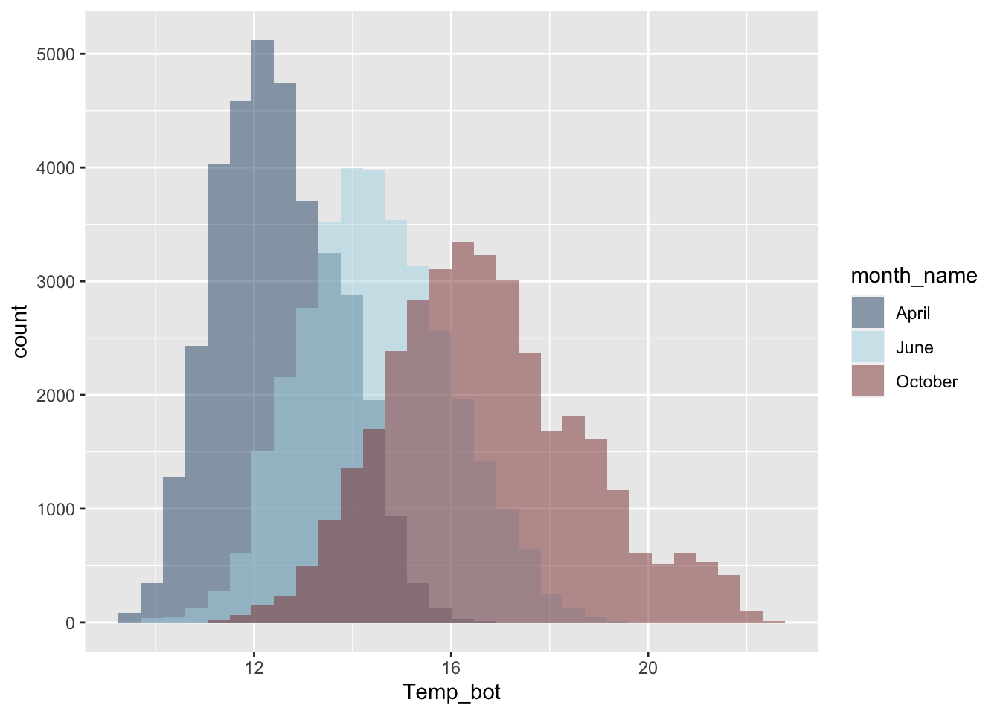
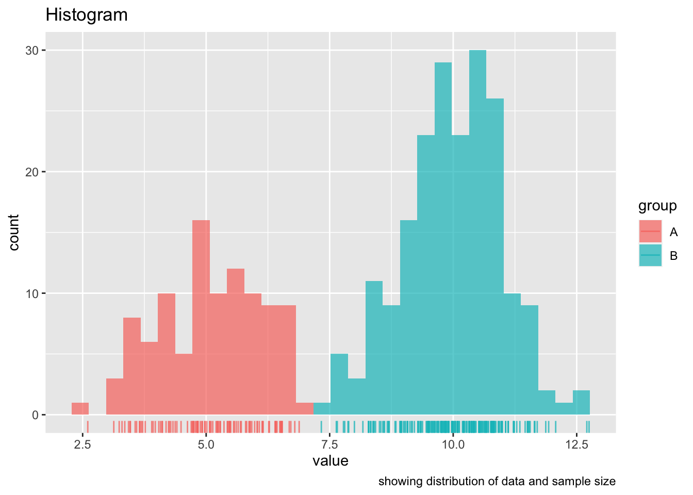
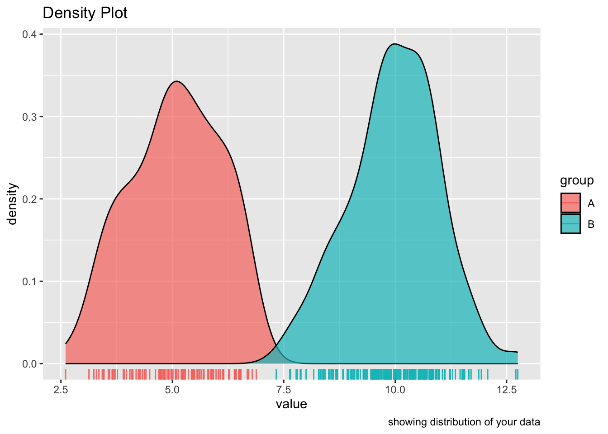
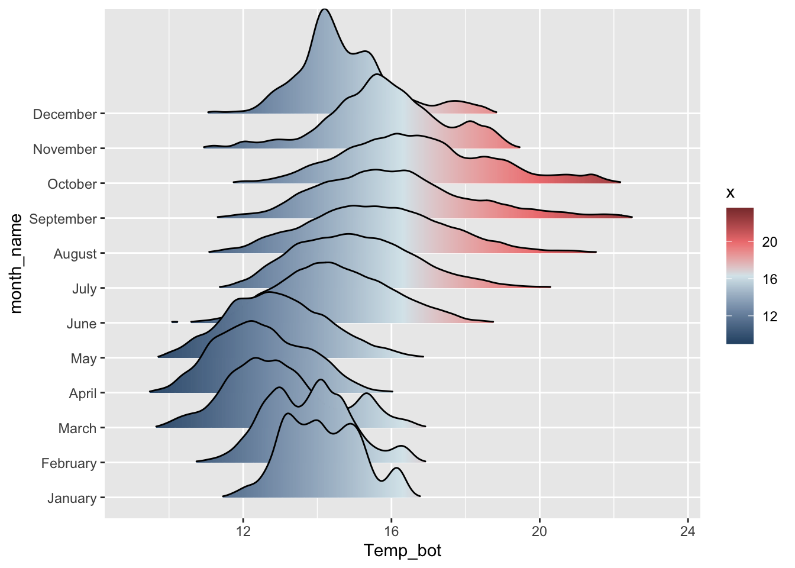
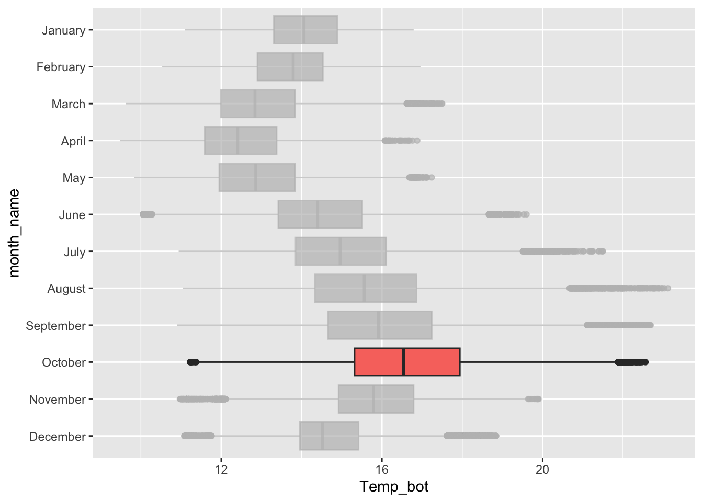
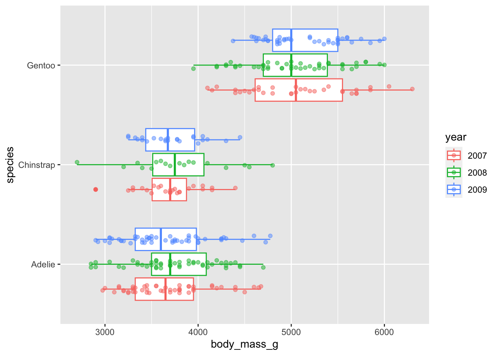

mapping - How values of a variable(s) of interest are represented by visuals
e.g height of bar, shaded region of area plot, color of data points
Example - you want to compare unemployment rates of 5 countries: A, B, C, D, E (the actual values here are not important)
bar graph ordered lowest to highest
pie chart with labeled percentages
map with color relating to unemployment rate
Hierarchy of elementary perceptual tasks
based on paper published in 1984, that orders more easily distiguishable elements
e.g. - hue and shade are at the bottom, meaning they’re harder to understand quickly
only considers statisyical charts
on maps, hue and shading can be very important
notes
Tips for Choosing Graphic Form
Think about the task(s) you want to enable or message(s) you want to convey.
a. For example, do you want to compare, see change or flow, reveal relationships or connections, envision temporal or spatial patterns.
Consider the number of variables and the number of data points, as well as the data types you're working with.
a. For example, do you have several vs. many data points? How many categorical and/or numeric variables? Are your variables ordered or not ordered? Data types can dictate which graphical form is appropriate.
b. data types - continuous vs discrete, nominal vs. ordinal, vs. binary
Try different graphic forms, especially if you have more than one task to enable or message to convey.
Arrange the components of the graphic to make it as easy as possible to extract meaning from your graphic quickly.
a. e.g. - ordering bars in a chart
b. ordering will depend on the question your plot to answer
Test the outcomes of your graphic on others, particularly on those who are representative of the audience you are trying to reach.
Critiquing Visuals
identify the primary and secondary insights that the graphic is trying to convey
Identify elementary perceptual tasks and what is confusing or difficult to do
e.g. comparing lengths, angles
Identify if it's possible (and if it makes sense) to use more effective elementary perceptual tasks for the primary and secondary insights
Identify points of confusion and decide how those could be addressed
e.g. a different graphic form, rearranging components, including an introduction graph, better annotation
3.2 Visualizing Distributions
Introduction
distribution - the spread of a numeric variable(s)
key distribution plot types
histograms
density plots
box plots
ridge line plots
Note
Case Study: Bottom Temperatures at Mohawk Reef
Background
using data from the Santa Barbara Coastal Long Term Ecological Research (SBC LTER)
Additional wrangling steps are available on slide 5, lecture 3.2
Code
## ==== import libraries ===library(tidyverse)library(chron)library(naniar)library(palmerpenguins) #used later for plot examples## === Read in data ===mko <-read_csv("https://portal.edirepository.org/nis/dataviewer?packageid=knb-lter-sbc.2007.17&entityid=02629ecc08a536972dec021f662428aa")
Code
## === Wrangling ===mko_clean <- mko %>%## --- clean date/time columns ---# select desired columnsselect(year, month, day, decimal_time, Temp_bot) %>%# combine yr, mo, and day columns into a single date columnunite(date, year, month, day, sep ="-", remove =FALSE) %>%# create a time column that's easier to interpret mutate(time = chron::times(decimal_time)) %>%# create combined date-time columnunite(date_time, date, time, sep =" ") %>%## --- coerce data types ---# change date_time from character string to date-time objectmutate(date_time =as.POSIXct(date_time, "%Y-%m-%d %H:%M:%S",tz ="GMT"), # time zone# change year, month, date columns to factor year =as.factor(year),month =as.factor(month),day =as.numeric(day)) %>%## --- add the month name ---# index the built-in `month.name` vectormutate(month_name =as.factor(month.name[month])) %>%## --- update NA values ---replace_with_na(replace =list(Temp_bot =9999))
Histograms
represent the distribution of a numeric variable(s), which is cut into several bins
default for ggplot is 30 bins
might want to adjust this, having too few/many bins can distort distributions
note
Code
## === Histograms ===mko_clean %>%## --- additional wrangling for data viz ---# order the date to have the same order as month_name mutate(month_name =factor(month_name, levels = month.name)) %>%# filter so there are less monthsfilter(month_name %in%c("April", "June", "October")) %>%## --- create the histogram ---# create baseplot, selecting variable and fill colorggplot(aes(x = Temp_bot, fill = month_name)) +# change position to identity so that it's the true distribution, try changing this back to the default `stack` to see differencesgeom_histogram(position ='identity',alpha =0.5, bindwidth =1) +# customize colorsscale_fill_manual(values =c("#2C5374", "#ADD8E6", "#8B3A3A"))

Important Considerations
useful when you want to visualize the shape of your data (not affected by bin number)
does not indicate sample size
can be misleading with small data sets
band width, which affects level of smoothing
Density Plots
smoothed version of a histogram
representation og the distributions of a numeric variable(s), which uses a kernel density estimate (KDE) to show the probability density function of the variable
area under the curve equals 1
good option when you’re concerned with the shape of the distribution
useful when you want to visualize the shape of your data (not affected by bin number)
does not indicate sample size
can be misleading with small data sets
band width, which affects level of smoothing
Histograms vs. Density Plots
histograms - show us the counts (frequency) of values in each range (bin), represented by the height of the bars
density plots - show the proportion of values in each range
area under the curve equal 1
peaks indicate where more values are concentrated, but it does not tell us anything about the the number of observations
Example - use dummy data to visualize the differences
Code
## === Create dummy data ===dummy_data <-data.frame(value =c(rnorm(n =100, mean =5),rnorm(n =200, mean =10)),group =rep(c("A", "B"),times =c(100, 200)))## === Create histogram ===ggplot(dummy_data, aes(x = value, fill = group)) +geom_histogram(position ='identity', alpha =0.7) +geom_rug(aes(color = group), alpha =0.75) +labs(title ="Histogram",caption ="showing distribution of data and sample size")

Code
## == Create density plot ===ggplot(dummy_data, aes(x = value, fill = group)) +geom_density(alpha =0.7) +geom_rug(aes(color = group), alpha =0.75) +geom_rug(aes(color = group), alpha =0.75) +labs(title ="Density Plot",caption ="showing distribution of your data")

Scaled Density Plots
In a scaled density plot, the area under the curve reflects the number of observations for each group
We can use scaled density plots to compare individual group distributions to the total distribution
Ridgeline Plots
Ridgeline plots show the distribution of a numeric variable for multiple groups
considerations
work best when you have > 6 groups
works well when there is a clear pattern in the result (e.g. if there is an obvious ranking in groups) and / or when visualizing changes in distributions over time or space
need a numeric variable with lots of values
ggridges has a number of different geoms for creating ridgeline plots
Example - creating ridgeline plots using ggridges
Code
# create the base plotggplot(mko_clean, aes(x = Temp_bot, y = month_name, fill =after_stat(x))) +# add the ridges geom, use rel_min_height to adjust tail ggridges::geom_density_ridges_gradient(rel_min_height =0.01,scale=3) +# reorganize by month namescale_y_discrete(limits = month.name) +# customize colors, these aren't necessary but they support the values on the x-axis scale_fill_gradientn(colors =c("#2C5374","#849BB4", "#D9E7EC","#EF8080", "#8B3A3A"))

Additional Distribution Plots
Box plots
summarize the distribution of a numeric variable for one or several groups
considerations
box plots summarize data, meaning we can't see the underlying shape of the distribution or sample size
add jittered points on top, or if large sample size, consider a violin plots
notes
Code
ggplot(mko_clean, aes(x = month_name, y = Temp_bot, fill = month_name)) +geom_boxplot() +#rev() reverses order of month name scale_x_discrete(limits =rev(month.name)) +coord_flip() +# highlight one month w gghighlight::gghighlight(month_name =="October") +# remove legendtheme(legend.position ="none")

Code
penguins %>%mutate(year =as.factor(year)) %>%ggplot(aes(x = species, y = body_mass_g, color = year)) +geom_boxplot() +geom_point(alpha =0.5, position =position_jitterdodge(jitter.width =0.2)) +coord_flip()

Violin Plots
visualize the distribution of a numeric variable for one or several groups, where the shape of the violin represents the density estimate of the variable (i.e. the more data points in a specific range, the larger the violin is for that range). They provide more information about the underlying distribution than a box plot.
considerations
ordering groups by median value can make it easier to understand
show sample size when comparing groups with very different distributions (e.g. half violin plot)